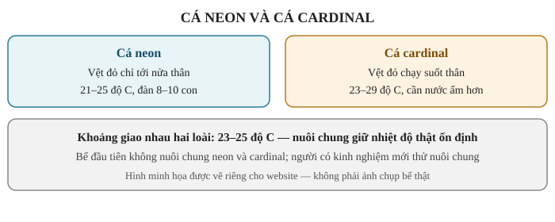

Cá neon và cá cardinal: nuôi đàn, khác nhau thế nào
Tác giả: Nguyễn Trung Đức
Cá neon và cá cardinal là cặp cá dễ nhầm nhất trong cửa hàng cá cảnh. Hai loài đều nhỏ, đều có vệt xanh neon chạy dọc thân và vệt đỏ bên dưới, đều bơi theo đàn ở tầng giữa, và đều sống ở suối rừng Amazon. Người mới thường mua nhầm: muốn cá cardinal vì vệt đỏ dài đẹp hơn, nhưng lại mang về cá neon; hoặc mua cá neon về bể nước ấm 27–28°C rồi thắc mắc vì sao cá nhạt màu và chết dần. Bài này so sánh hai loài theo đúng hồ sơ loài của Seriously Fish, để bạn phân biệt được bằng mắt, chọn đúng loài cho nước nhà mình, và nuôi đúng cách cho loài đã chọn.
Bài này không viết lại Vì sao cá neon chết hàng loạt sau 1 tuần — Vì sao cá neon chết hàng loạt sau 1 tuần đã viết riêng về sáu nguyên nhân khiến cá neon chết hàng loạt sau một tuần, và bài này chỉ nhắc ngắn tới đó khi cần. Bài này cũng không viết lại bảng 10 loài của 10 loại cá cảnh dễ nuôi nhất cho người mới — bảng đó đã có các con số tóm tắt của cả hai loài, và bài này đi sâu vào phần bảng đó chưa trả lời hết: hai loài khác nhau ở đâu, nuôi chung được không, và chọn loài nào cho bể của bạn. Chu trình nitơ chỉ được nhắc ngắn ở đây, vì đã giải thích đầy đủ ở Cách xử lý nước mới trước khi thả cá. Cách cho ăn đầy đủ đã được viết ở Cho cá cảnh ăn đúng cách: bao nhiêu, mấy lần và lỗi thường gặp; bài này chỉ nhắc ngắn về thức ăn của hai loài.
1. Phân biệt trong 10 giây: nhìn vệt đỏ chạy tới đâu
Cách phân biệt nhanh nhất không cần đo đạc gì: nhìn xem vệt đỏ chạy dài tới đâu trên thân cá.
Ở cá cardinal, vệt đỏ chạy suốt chiều dài thân, từ ngay sau mắt tới tận gốc đuôi, nằm dưới vệt xanh trong toàn bộ chiều dài đó. Ở cá neon, vệt đỏ chỉ bắt đầu từ khoảng giữa thân — từ gần gốc vây bụng trở về sau — và chỉ dài tới nửa thân sau. Seriously Fish diễn đạt điểm này bằng ngôn ngữ phân loại: ở cá neon sống, sắc tố đỏ trên thân không kéo dài tới trước gốc vây ngực; ở cá cardinal sống, sắc tố đỏ kéo dài tới trước gốc vây bụng một khoảng xa. Nói theo cách của người mua cá: cá cardinal đỏ gần như toàn thân dưới, cá neon chỉ đỏ nửa thân sau.
Có hai dấu hiệu phụ để kiểm tra lại khi bạn còn phân vân. Thứ nhất, vệt xanh của cá cardinal rộng hơn và kéo dài ra sau hơn vệt xanh của cá neon, còn vệt xanh của cá neon hẹp hơn và kết thúc sớm hơn. Thứ hai, cá neon có một vạch trắng rõ hơn trên vây hậu môn, trong khi vạch trắng đó ở cá cardinal mờ hơn. Seriously Fish ghi cả hai điểm này trong phần phân biệt hai loài. Trong cửa hàng, khi cá còn nhỏ và chưa lên màu hết, vệt đỏ là dấu hiệu đáng tin nhất; vệt xanh và vạch trắng chỉ dùng để kiểm tra lại, không dùng để kết luận một mình.
Kích thước cũng giúp phân biệt phần nào, nhưng không nên dùng làm dấu hiệu chính vì cá trong cửa hàng thường còn non. Theo Seriously Fish, cá neon trưởng thành dài khoảng 30 mm tính tới gốc đuôi, còn cá cardinal dài khoảng 35 mm. Cá cardinal lớn hơn cá neon một chút khi trưởng thành, nhưng một con cá cardinal non có thể nhỏ hơn một con cá neon trưởng thành, vì vậy đừng kết luận chỉ dựa vào kích thước.
Một lưu ý nữa: cả hai loài đều nhạt màu khi stress, khi mới về bể, khi đèn quá sáng hoặc khi nước không hợp. Cá neon nhạt màu vẫn là cá neon, và cá cardinal nhạt màu vẫn là cá cardinal — đừng đợi cá lên màu rực rồi mới phân biệt, vì lúc đó bạn đã mua xong. Hãy nhìn vệt đỏ trong lúc cá còn ở bể cửa hàng, dưới ánh sáng bình thường của cửa hàng, và so sánh nhiều con trong đàn chứ không chỉ một con.
2. Bảng so sánh đầy đủ: cùng một gốc, khác nhau ở nước ấm

Hai loài cùng chi Paracheirodon, cùng sống ở suối rừng Amazon, cùng cần bể có mặt đáy 60×30 cm, nhưng chúng không phải là một loài với hai tên gọi. Bảng dưới đây lấy toàn bộ con số từ hai hồ sơ loài của Seriously Fish, mở trực tiếp ngày 23/11/2026, kèm khoảng nước ở Việt Nam của Aquatech VN đã kiểm chứng ở 10 loại cá cảnh dễ nuôi nhất cho người mới.
| Tiêu chí | Cá neon (Paracheirodon innesi) | Cá cardinal (Paracheirodon axelrodi) |
|---|---|---|
| Vệt đỏ | Chỉ dài tới nửa thân sau, không kéo tới trước gốc vây ngực | Chạy suốt thân, từ sau mắt tới gốc đuôi, kéo tới trước gốc vây bụng |
| Vệt xanh | Hẹp hơn, kết thúc sớm hơn | Rộng hơn, kéo dài ra sau hơn |
| Vạch trắng vây hậu môn | Rõ hơn | Mờ hơn |
| Chiều dài trưởng thành | Khoảng 30 mm tính tới gốc đuôi | Khoảng 35 mm tính tới gốc đuôi |
| Mặt bể tối thiểu | 60×30 cm (khoảng 54 lít) | 60×30 cm (khoảng 54 lít) |
| Nhiệt độ theo Seriously Fish | 21–25°C | 23–29°C |
| Nhiệt độ theo Aquatech VN | 20–26°C, pH 5,5–7,0 | 23–27°C, pH 5,5–7,0 |
| pH theo Seriously Fish | 4,0–7,5 | 3,5–7,5 |
| Độ cứng theo Seriously Fish | 1–12 dGH | 1–12 dGH |
| Nhóm tối thiểu | 8–10 con trở lên | 8–10 con trở lên |
| Ánh sáng | Mờ, có cây nổi che bớt | Mờ, có cây nổi che bớt |
| Nền và trang trí | Nền cát, lũa, cây thủy sinh | Nền cát, lũa, cây thủy sinh |
| Giá tham khảo 23/11/2026 | 3.000–15.000 VNĐ/con (khoảng rộng theo bài mười loài cá) | 5.000–10.000 VNĐ/con (Aquatech VN) |
| Nguồn gốc trong tự nhiên | Suối rừng Amazon ở Colombia, Brazil, Peru | Sông Rio Negro và Orinoco ở Brazil, Colombia, Venezuela |
Điểm khác nhau quan trọng nhất trong bảng là nhiệt độ. Cá cardinal cần nước ấm hơn cá neon: khoảng của Seriously Fish cho cá cardinal là 23–29°C, còn cho cá neon là 21–25°C. Khoảng giao nhau của hai loài chỉ là 23–25°C, tức chỉ rộng 2 độ. Khoảng của Aquatech VN cũng cho thấy điều tương tự: cá neon ở Việt Nam được ghi 20–26°C, cá cardinal được ghi 23–27°C. Nếu bạn đặt bể ở 26–27°C cho cá cardinal, cá neon trong cùng bể đang ở mép trên của khoảng chịu đựng; nếu bạn đặt bể ở 21–22°C cho cá neon, cá cardinal đang ở dưới mép dưới của khoảng chịu đựng. Đó là lý do bài mười loài cá đã khuyên người mới không nên nuôi chung hai loài trong một bể, và người có kinh nghiệm mới nên thử nuôi chung khi giữ được nhiệt độ thật ổn định trong khoảng giao nhau 23–25°C.
Điểm giống nhau quan trọng nhất là cả hai loài đều cần nước mềm, hơi chua và ổn định. Cả hai hồ sơ Seriously Fish đều ghi độ cứng 1–12 dGH cho cả hai loài, và cả hai đều sống trong tự nhiên ở suối rừng có nước chua, độ cứng cacbonat không đáng kể, nước nhuốm màu nâu do chất mùn từ lá cây phân hủy. Nước máy cứng, kiềm ở nhiều nơi tại Việt Nam không phải là nước lý tưởng cho cả hai loài, nhưng cá cảnh đã quen với nước máy qua nhiều thế hệ nhân giống thường chịu được tốt hơn cá hoang dã — với điều kiện nước phải ổn định, không dao động mạnh trong ngày. Cách xử lý nước mới trước khi thả cá đã viết cách xử lý nước mới và chạy lọc; với hai loài này, "ổn định" quan trọng hơn "đúng con số tuyệt đối".
3. Nuôi đàn: cả hai loài đều cần ít nhất 8–10 con
Cả hai hồ sơ Seriously Fish đều khuyên giống nhau: mua một nhóm hỗn hợp trống mái ít nhất 8–10 con, kèm thêm các loài cá bơi theo đàn khác để cá cảm thấy an toàn, và bạn sẽ được xem cảnh cá bơi theo đàn tự nhiên hơn. Bài mười loài cá đã ghi con số này cho cá neon, và bài này xác nhận con số đó cũng đúng cho cá cardinal. Nuôi 3–4 con neon hay cardinal trong bể nhỏ không phải là nuôi thử tiết kiệm, mà là làm cá stress kéo dài: cá nhạt màu, hay trốn, bỏ ăn và dễ bệnh hơn — bài cá neon chết đã viết kỹ về điểm này với cá neon, và nguyên tắc đó cũng đúng với cá cardinal.
Bể cho cả hai loài đều cần mặt đáy tối thiểu 60×30 cm, tức khoảng 54 lít, theo cả hai hồ sơ Seriously Fish. Aquatech VN ghi bể tối thiểu 60 lít cho đàn cardinal 10–15 con, tức là con số thực tế cho một đàn cardinal đầy đủ còn lớn hơn mức sàn 54 lít một chút. Bài này khuyên bạn lấy 60 lít làm mức thực tế cho đàn 10 con của cả hai loài, thay vì lấy 54 lít làm mục tiêu: 54 lít là mức sàn theo hồ sơ loài, còn 60 lít là mức mà đàn 10 con bơi thoải mái hơn và nước ổn định hơn.
Ánh sáng và trang trí cho hai loài cũng giống nhau, vì cả hai đều sống ở suối rừng râm mát. Cả hai hồ sơ Seriously Fish đều viết hai loài làm tốt nhất dưới ánh sáng khá mờ, và thích bể có nền cát, lũa, cây thủy sinh và cây nổi che bớt ánh sáng. RSPCA khuyên đèn bật 8–10 giờ mỗi ngày cho bể cá nói chung — con số này đã được dùng thống nhất trong toàn bộ website, từ bài mười loài cá tới bài cá neon chết và Chọn đèn và cây thủy sinh dễ sống cho bể mới: bắt đầu ít, tăng dần. Đừng bật đèn 12–14 giờ mỗi ngày cho hai loài này rồi mong cá lên màu đẹp: đèn sáng lâu làm cá nhạt màu, stress và rêu tảo phát triển, trong khi cá chỉ cần ánh sáng vừa đủ để bạn ngắm và cây quang hợp.
4. Nuôi chung hai loài: người mới nên chọn một loài, người có kinh nghiệm mới thử
Đây là câu hỏi mà bài mười loài cá mới chỉ trả lời ngắn gọn, và bài này trả lời đầy đủ hơn. Câu trả lời ngắn là: người mới nên chọn một loài trong hai loài cho bể đầu tiên. Câu trả lời dài hơn giải thích vì sao.
Thứ nhất, khoảng nhiệt độ giao nhau chỉ rộng 2 độ (23–25°C). Giữ nhiệt độ bể ổn định trong khoảng 2 độ đó cả ngày lẫn đêm, cả mùa nóng lẫn mùa lạnh, là việc khó hơn nhiều so với việc giữ nhiệt độ trong khoảng rộng 4–5 độ cho một loài. Sưởi trong bể nhỏ thường dao động 1–2 độ mỗi lần bật tắt, và nhiệt độ phòng thay đổi theo giờ trong ngày. Nếu sưởi của bạn dao động 2 độ quanh mức đặt 24°C, bể của bạn đã chạm cả hai mép của khoảng giao nhau trong một ngày. Người có kinh nghiệm mới nên thử nuôi chung, và khi đó phải dùng sưởi có bộ điều nhiệt tốt, nhiệt kế riêng để kiểm tra mỗi ngày như RSPCA khuyên, và đặt bể ở nơi nhiệt độ phòng ổn định.
Thứ hai, hai loài có độ nhạy cảm khác nhau với nước xuống cấp. Seriously Fish viết cá cardinal hoang dã kém chịu đựng nước xuống cấp hơn cá cardinal nuôi thương mại, và cá cardinal nói chung là loài nhạy cảm với các hợp chất độc trong nước. Cá neon cũng nhạy cảm, nhưng bài cá neon chết đã viết cá neon chết hàng loạt chủ yếu vì bể chưa chạy lọc xong và nước chưa ổn định — và App-Aquatic khuyên chỉ nên nuôi cá neon khi bể đã chạy ít nhất ba tháng. Với cá cardinal, yêu cầu về bể ổn định còn cao hơn một bậc, vì vậy nếu bể của bạn mới chạy được một tháng, đừng thả cả hai loài vào cùng lúc rồi mong cả hai đều khỏe.
Thứ ba, nuôi chung hai loài trong một bể 60 lít đồng nghĩa với hai đàn cá theo đàn trong một bể nhỏ. Mỗi đàn cần ít nhất 8–10 con, tức là hai đàn đã là 16–20 con cá trong bể 60 lít, chưa kể cá tầng đáy như cá chuột. Bài mười loài cá đã khuyên: nếu muốn thêm cá tam giác hay cá chuột vào bể neon 60 lít, hãy dùng bể lớn hơn (khoảng 100 lít trở lên) và thêm từng nhóm một. Nguyên tắc đó cũng đúng ở đây: nếu bạn muốn nuôi cả neon lẫn cardinal, hãy dùng bể từ 100 lít trở lên, thả một đàn trước, chờ 2–3 tuần, đo nước, rồi mới thả đàn thứ hai theo hướng dẫn của App-Aquatic đã dẫn ở bài mười loài cá.
5. Mua cá: cá cardinal hoang dã và cá neon lai tạo đều cần chọn kỹ
Hai loài tới cửa hàng bằng hai con đường khác nhau, và mỗi con đường có rủi ro riêng.
Cá cardinal trong cửa hàng có một tỉ lệ đáng kể vẫn là cá đánh bắt tự nhiên hoặc từ các dự án nhân giống cộng đồng như Project Piaba ở vùng Rio Negro, theo Seriously Fish. Cá hoang dã đẹp hơn, màu đỏ đậm hơn, nhưng nhạy cảm hơn với nước xuống cấp và với thay đổi đột ngột khi chuyển bể. Cá cardinal nuôi thương mại chịu đựng tốt hơn, nhưng màu có thể nhạt hơn cá hoang dã một chút. Khi mua cá cardinal, hãy hỏi cửa hàng cá là cá hoang dã hay cá nuôi, và nếu là cá hoang dã thì hỏi cá đã về cửa hàng bao lâu, đã ăn chưa. Cá hoang dã mới về chưa ăn là cá chưa ổn định, đừng mua về bể mới.
Cá neon trong cửa hàng hầu hết là cá nhân giống thương mại, và Seriously Fish viết rõ nhiều năm nhân giống thương mại đã làm suy yếu dòng cá neon cảnh, dị tật và sức khỏe kém đã trở nên phổ biến, vì vậy cần chọn cá cẩn thận. Bài cá neon chết đã viết kỹ về điểm này. Khi mua cá neon, hãy quan sát đàn cá ở cửa hàng ít nhất vài phút: cá bơi theo đàn, màu rõ, vây không rách, không có con nào tách đàn nằm một góc. Seriously Fish khuyên tránh mua cá có dấu hiệu bồn chồn, mảng trắng trên da hoặc tách khỏi đàn — đó là dấu hiệu của bệnh neon tetra, bệnh do vi sinh vật Pleistophora hyphessobryconis gây ra, gần như không chữa được khi đã nặng. Bài cá neon chết đã viết đầy đủ về bệnh này và bệnh giả do vi khuẩn Flavobacterium columnare có thể chữa được, vì vậy bài này không viết lại mà chỉ nhắc bạn đọc lại bài cá neon chết trước khi mua cá neon.
Giá của hai loài cũng khác nhau, và bạn nên biết trước để không bị bất ngờ ở cửa hàng. Bài mười loài cá đã tổng hợp khoảng giá tham khảo ngày 23/11/2026: cá neon 3.000–15.000 VNĐ/con, là khoảng rộng bao trùm nhiều bảng giá khác nhau — bảng giá Quy Nhơn trên cabaymau.vn ghi 3.000–8.000 VNĐ/con, trang tổng hợp của Aquatech VN ghi 6.000–12.000 VNĐ/con, bảng giá của Aquatech VN ghi 5.000–15.000 VNĐ/con. Cá cardinal được Aquatech VN ghi 5.000–10.000 VNĐ/con. Hai khoảng giá này chồng lên nhau, vì vậy giá không phải là cách phân biệt hai loài — một con cá neon dòng đẹp có thể đắt hơn một con cá cardinal thường. Hãy phân biệt bằng vệt đỏ như mục 1, và kiểm tra giá tại cửa hàng vào ngày mua, vì giá thay đổi theo dòng cá, kích thước và thời điểm mua.
6. Cho ăn: hai loài ăn giống nhau, đều cần thức ăn nhỏ và đa dạng
Về thức ăn, hai loài gần như giống nhau hoàn toàn. Cả hai hồ sơ Seriously Fish đều viết hai loài có khả năng ăn tạp, ăn động vật không xương sống nhỏ, giáp xác, tảo sợi và quả rụng trong tự nhiên; trong bể, chúng sống được bằng thức ăn khô, nhưng khỏe nhất khi được cho ăn đa dạng, gồm cả ấu trùng chironomid sống và đông lạnh (trùn huyết), ấu trùng muỗi, daphnia và moina. Cho cá cảnh ăn đúng cách: bao nhiêu, mấy lần và lỗi thường gặp đã viết quy tắc chung cho cá cảnh: cho ăn 1–2 lần mỗi ngày, lượng cá ăn hết trong 2–3 phút, vớt thức ăn thừa sau 5 phút. Quy tắc đó áp dụng nguyên vẹn cho cả hai loài, với một lưu ý riêng: cả hai loài đều có miệng nhỏ, vì vậy thức ăn viên phải là loại siêu nhỏ hoặc cám nghiền nhỏ — bài cá neon chết đã viết cá neon không ăn được viên thức ăn lớn, và điều đó cũng đúng với cá cardinal.
Đừng cho hai loài ăn chỉ bằng một loại cám khô duy nhất trong nhiều tháng. Cá ăn một loại thức ăn khô duy nhất sẽ thiếu đa dạng dinh dưỡng và nhạt màu dần. Cách làm thực tế cho người mới là: cám chất lượng tốt làm thức ăn chính mỗi ngày, cộng thêm trùn huyết hoặc daphnia đông lạnh 2–3 lần mỗi tuần, mỗi lần một lượng nhỏ. Khi cho ăn thức ăn đông lạnh, hãy rã đông trong một cốc nước bể trước rồi mới đổ vào bể, đừng thả cả viên đông lạnh vào bể — viên đông lạnh làm nước lạnh đột ngột ở chỗ cá ăn và tan ra thành nhiều vụn nhỏ mà cá không ăn hết.
7. Chọn loài nào cho bể của bạn
Nếu bạn đã đọc tới đây mà vẫn chưa quyết định, hãy dùng bảng dưới đây. Bảng này không xếp hạng loài nào "tốt hơn" — hai loài đều đẹp và đều hợp với người mới khi bể đã sẵn sàng. Bảng chỉ giúp bạn chọn loài hợp với điều kiện bạn đang có.
| Tình huống của bạn | Nên chọn |
|---|---|
| Bể mới chạy 1–2 tháng, nước máy hơi cứng | Chưa nên chọn loài nào trong hai loài — chờ bể chạy ít nhất 3 tháng rồi mới nuôi neon, theo App-Aquatic (bài cá neon chết) |
| Bể đã chạy trên 3 tháng, nước mềm, nhiệt độ giữ được 21–25°C | Cá neon |
| Bể đã chạy trên 3 tháng, nước mềm, nhiệt độ giữ được 23–27°C, muốn vệt đỏ dài | Cá cardinal |
| Bể nhỏ 54–60 lít, chỉ nuôi một đàn | Chọn một loài, nuôi 10 con |
| Bể từ 100 lít trở lên, đã nuôi cá cảnh trên 6 tháng, giữ nhiệt độ ổn định 23–25°C | Có thể thử nuôi chung hai loài, thả từng đàn cách nhau 2–3 tuần |
| Thích cá hoang dã, chấp nhận chăm kỹ hơn | Cá cardinal (hỏi rõ cá hoang dã hay cá nuôi ở cửa hàng) |
| Muốn cá rẻ hơn, dễ mua hơn, bể cộng đồng nước mát hơn | Cá neon |
Một lưu ý cuối về việc chọn loài: đừng chọn theo màu sắc của một con cá duy nhất trong bể cửa hàng. Cá neon và cá cardinal đều lên màu đẹp nhất khi bơi theo đàn đủ lớn, dưới ánh sáng mờ, trên nền cát sẫm và có cây. Một con cá cardinal đẹp nhất trong cửa hàng có thể nhạt màu trong bể của bạn nếu bạn chỉ nuôi 3 con trong bể sáng chói không có cây. Ngược lại, một đàn neon 10 con trong bể cây, ánh sáng dịu, nước ổn định sẽ đẹp hơn nhiều so với một con cardinal đơn lẻ trong bể trống. Đàn và môi trường quyết định màu sắc nhiều hơn giống cá.
8. Sinh sản: cá neon đẻ trứng, cá cardinal đẻ trứng — và cả hai đều khó nuôi cá con
Người mới hay hỏi hai loài này có sinh sản trong bể cộng đồng không. Câu trả lời ngắn là: cá có thể đẻ trứng trong bể cộng đồng, nhưng cá con gần như không sống sót nếu bạn không chuẩn bị bể riêng. Cả hai loài đều đẻ trứng, khác hẳn cá bảy màu đẻ con trong Cá bảy màu sinh sản: chăm cá con mới đẻ — và trứng của chúng sẽ bị cá lớn ăn hết nếu không được tách ra.
Seriously Fish viết về cá cardinal: nếu muốn nuôi được số lượng cá con đáng kể, bạn cần bể riêng rất tối, có cụm cây lá nhỏ như rêu Java hoặc chổi đẻ trứng để cá đẻ trứng vào đó; nước sinh sản nên mềm và chua, pH 5,5–6,5, độ cứng 1–5 dGH, nhiệt độ khoảng 26,5–29°C; chỉ cần một lọc bọt biển chạy bằng khí thật nhẹ. Cá bố mẹ phải được tách ra ngay khi thấy trứng, vì cá lớn sẽ ăn trứng khi có cơ hội. Trứng nở trong 24–36 giờ, cá con bơi tự do sau 3–4 ngày, và phải cho ăn thức ăn dạng trùng cỏ (infusoria) trong vài ngày đầu, tới khi đủ lớn để ăn trùn nhỏ hoặc ấu trùng artemia mới nở. Trứng và cá con nhạy cảm với ánh sáng trong giai đoạn đầu, vì vậy bể sinh sản nên giữ tối nếu có thể.
Hồ sơ cá neon của Seriously Fish viết gần như giống hệt về sinh sản: bể riêng rất tối, cây lá nhỏ hoặc chổi đẻ trứng, nước mềm và chua pH 5,5–6,5, độ cứng 1–5 dGH, nhiệt độ khoảng 26,5–29°C, lọc bọt biển chạy thật nhẹ, cá bố mẹ tách ra ngay khi thấy trứng, trứng nở trong 24–36 giờ, cá con bơi tự do sau 3–4 ngày, cho ăn infusoria trước rồi mới tới trùn nhỏ và ấu trùng artemia. Điểm giống nhau này cho thấy hai loài không chỉ giống nhau về ngoại hình mà còn giống nhau về sinh sản — và cả hai đều là loài khó sinh sản trong bể của người mới, vì nước sinh sản phải mềm và chua hơn nhiều so với nước bể cộng đồng thông thường.
Vì vậy bài này khuyên người mới đừng đặt mục tiêu sinh sản hai loài này trong năm đầu tiên. Hãy nuôi một đàn khỏe mạnh trong bể cộng đồng trước, học cách giữ nước ổn định trong nhiều tháng, rồi mới nghĩ tới bể sinh sản riêng. Nếu bạn thấy cá đẻ trứng trong bể cộng đồng, hãy coi đó là dấu hiệu bể của bạn đang tốt — cá chỉ đẻ khi khỏe và nước hợp — chứ không phải là cơ hội để nuôi cá con ngay lập tức.
Checklist trước khi mua neon hoặc cardinal
- Đo pH, độ cứng và nhiệt độ nước bể của bạn, ghi lại con số; bể đã chạy ít nhất 3 tháng (riêng cá neon, theo App-Aquatic trong bài cá neon chết).
- Biết rõ mình mua loài nào: kiểm tra vệt đỏ chạy tới đâu trên thân cá, so sánh nhiều con trong đàn.
- Đếm đủ đàn tối thiểu 8–10 con, bể tối thiểu 60×30 cm (khoảng 54–60 lít).
- Chọn một loài cho bể đầu tiên; chỉ nuôi chung hai loài khi bể từ 100 lít trở lên và giữ được nhiệt độ ổn định 23–25°C.
- Quan sát cá ở cửa hàng ít nhất vài phút: cá bơi theo đàn, màu rõ, vây không rách, không có con nào bồn chồn, có mảng trắng hoặc tách đàn.
- Hỏi cửa hàng cá là cá hoang dã hay cá nuôi, cá đã về bao lâu, cá ăn loại thức ăn nào.
- Chuẩn bị thức ăn viên siêu nhỏ hoặc cám nghiền nhỏ, cộng thêm trùn huyết hoặc daphnia đông lạnh 2–3 lần mỗi tuần.
- Mang cá về bằng túi có nhiều không khí hơn nước, làm quen nước từ từ: ngâm túi 30 phút cho nhiệt độ cân bằng theo RSPCA, hoặc làm quen nhỏ giọt 30–45 phút theo App-Aquatic nếu nước cửa hàng và nước nhà bạn khác nhau nhiều (bài cá neon chết).
Kết luận
Cá neon và cá cardinal giống nhau ở hầu hết mọi thứ: cùng chi, cùng quê Amazon, cùng cần bể 60×30 cm, cùng cần đàn 8–10 con, cùng thích ánh sáng mờ, nền cát và lũa, cùng ăn thức ăn nhỏ và đa dạng. Chúng khác nhau ở hai điểm mà người mới hay bỏ qua: vệt đỏ — cardinal đỏ suốt thân, neon chỉ đỏ nửa thân sau — và nhiệt độ — cardinal cần nước ấm hơn, neon cần nước mát hơn, khoảng giao nhau chỉ rộng 2 độ. Nếu bạn nhớ được hai điểm đó, bạn sẽ không mua nhầm loài, không đặt sai nhiệt độ, và không thả hai loài vào cùng một bể nhỏ rồi thắc mắc vì sao một loài nhạt màu dần. Hãy chọn một loài cho bể đầu tiên, nuôi đủ đàn, giữ nước ổn định, và để đàn cá bơi theo đàn dưới ánh sáng dịu — đó là lúc cả hai loài đều đẹp nhất.
Nguồn tham khảo
- Seriously Fish, "Paracheirodon innesi (Neon Tetra)" — cá neon dài 30 mm, mặt bể 60×30 cm (khoảng 54 lít), nhiệt độ 21–25°C, pH 4,0–7,5, độ cứng 1–12 dGH, nuôi ít nhất 8–10 con, ánh sáng mờ, sắc tố đỏ không kéo tới trước gốc vây ngực, vệt xanh hẹp hơn, vạch trắng vây hậu môn rõ hơn, dòng cá cảnh suy yếu do nhân giống thương mại, dấu hiệu bệnh neon tetra gồm bồn chồn, mảng trắng trên da, tách khỏi đàn, sinh sản cần pH 5,5–6,5, độ cứng 1–5 dGH, nhiệt độ 26,5–29°C, trứng nở 24–36 giờ, cá con bơi tự do sau 3–4 ngày (truy cập 23/11/2026): https://www.seriouslyfish.com/species/paracheirodon-innesi
- Seriously Fish, "Paracheirodon axelrodi (Cardinal Tetra)" — cá cardinal dài 35 mm, mặt bể 60×30 cm (khoảng 54 lít), nhiệt độ 23–29°C, pH 3,5–7,5, độ cứng 1–12 dGH, nuôi ít nhất 8–10 con, ánh sáng mờ, sắc tố đỏ kéo tới trước gốc vây bụng, vệt xanh rộng hơn và kéo dài ra sau hơn, vạch trắng vây hậu môn mờ hơn, cá hoang dã kém chịu đựng nước xuống cấp hơn cá nuôi thương mại, một tỉ lệ đáng kể cá trong cửa hàng là cá đánh bắt tự nhiên hoặc từ dự án Project Piaba, sinh sản cần pH 5,5–6,5, độ cứng 1–5 dGH, nhiệt độ 26,5–29°C, trứng nở 24–36 giờ, cá con bơi tự do sau 3–4 ngày (truy cập 23/11/2026): https://www.seriouslyfish.com/species/paracheirodon-axelrodi/
- Aquatech VN, "Cá Neon Chỉ Đỏ" và "Các Loại Cá Cảnh Đẹp Nhất" — cá neon chỉ đỏ bể tối thiểu 60 lít cho đàn 10–15 con, nhiệt độ 23–27°C, pH 5,5–7,0, giá lẻ 5.000–10.000 VNĐ/con; cá neon 6.000–12.000 VNĐ/con, nhiệt độ 20–26°C, pH 5,5–7,0 (đã mở trực tiếp và kiểm chứng ở 10 loại cá cảnh dễ nuôi nhất cho người mới ngày 23/11/2026; mở lại cùng ngày để đối chiếu cho cá neon và cá cardinal: nuôi đàn, khác nhau thế nào thì trang báo giới hạn tốc độ 429 nên số liệu giữ nguyên theo 10 loại cá cảnh dễ nuôi nhất cho người mới, không đổi): https://aquatechvn.com/products/ca-neon-chi-do và https://aquatechvn.com/cac-loai-ca-canh-dep-nhat.html
- RSPCA, "Choosing an Aquarium for Pet Fish" — amoniac và nitrit an toàn ở 0 mg/L, đèn 8–10 giờ mỗi ngày, ngâm túi cá 30 phút khi thả (đã mở trực tiếp ở 10 loại cá cảnh dễ nuôi nhất cho người mới, cách xử lý nước mới trước khi thả cá và vì sao cá neon chết hàng loạt sau 1 tuần ngày 23/11/2026): https://science.rspca.org.uk/en/web/rspca/adviceandwelfare/pets/fish/environment
- App-Aquatic, "Best Beginner Aquarium Fish | Easy Starter Species" — cá neon chỉ nên nuôi khi bể đã chạy ít nhất ba tháng, làm quen nước nhỏ giọt 30–45 phút cho cá nhạy cảm, thả một nhóm loài mỗi lần và chờ 2–3 tuần giữa các lần thêm (đã mở trực tiếp ở 10 loại cá cảnh dễ nuôi nhất cho người mới và vì sao cá neon chết hàng loạt sau 1 tuần ngày 23/11/2026): https://app-aquatic.com/guide-best-beginner-aquarium-fish.html